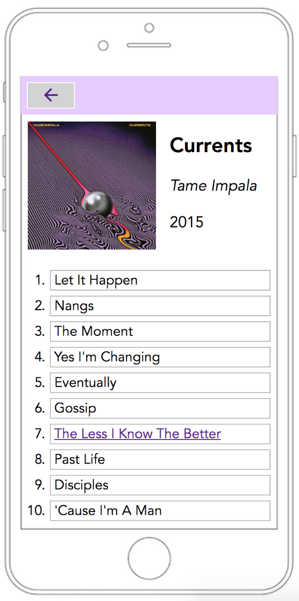

Here's some more information on one of my recent projects.
This is the front end design of a music player. It supports an elapsed time slider, skipping/going back songs, as well as playing and pausing them. It's home page allows you to choose from various albums. From there, you can choose which song in the album you'd like to play. During playback, you're able to see how much time has elapsed in a given song.